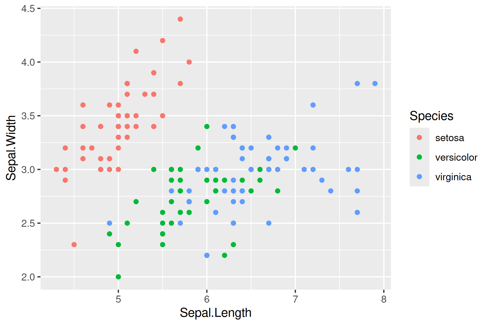

R code
library(tidyverse)
library(janitor)
library(plotly)
library(DT)Today we will build upon the graphing approaches in the with all the Data Carpentry ggplot tutorial
The Cookbook for R by Winston Chang is also great for tidying up our graphs.
Here are a couple of cheat sheets that can be useful
library(tidyverse)
library(janitor)
library(plotly)
library(DT) ggplot(data = iris, aes(x = Sepal.Length, y = Sepal.Width)) +
geom_point(aes(color=Species, shape=Species)) +
labs(title = "Iris Sepal Length vs Wide", x = "Sepal Length", y = "Sepal Width", color = "Plant Species", shape = "Plant Species") 
https://r-charts.com/ggplot2/themes/
ggplot(data = iris, aes(x = Sepal.Length, y = Sepal.Width)) +
geom_point(aes(color=Species, shape=Species)) +
labs(title = "Iris Sepal Length vs Wide", x = "Sepal Length", y = "Sepal Width", color = "Plant Species", shape = "Plant Species") +
theme_classic()
ggplot(data = iris, aes(x = Sepal.Length, y = Sepal.Width)) +
geom_point(color = "red", aes(shape = Species))+
labs(title = "Iris Sepal Length vs Wide", x = "Sepal Length", y = "Sepal Width") 
ggplot(data = iris, aes(x = Sepal.Length, y = Sepal.Width)) +
geom_point(aes(color = Species, shape = Species)) +
scale_color_manual(values=c("blue", "purple", "red")) +
labs(title = "Iris Sepal Length vs Wide", x = "Sepal Length", y = "Sepal Width") 
ggplot(data = iris, aes(x = Sepal.Length, y = Sepal.Width)) +
geom_point(aes(color = Species, shape = Species)) +
scale_color_brewer(palette="Dark2") +
labs(title = "Iris Sepal Length vs Wide", x = "Sepal Length", y = "Sepal Width") 
library(viridisLite)
ggplot(data = iris, aes(x = Sepal.Length, y = Sepal.Width)) +
geom_point(aes(fill = Species), color = "black", pch=21) +
labs(title = "Iris Sepal Length vs Wide", x = "Sepal Length", y = "Sepal Width") 
viridisLite - Colorblind-Friendly Color Maps for R](https://sjmgarnier.github.io/viridisLite/)
library(viridisLite)
ggplot(data = iris, aes(x = Sepal.Length, y = Sepal.Width)) +
geom_point(aes(color = Species, shape = Species)) +
scale_colour_viridis_d() +
labs(title = "Iris Sepal Length vs Wide", x = "Sepal Length", y = "Sepal Width") 
Here’s an overview of Unix directory paths, which are fundamental to navigating and managing files in Unix-like operating systems (such as on Unity). There directory paths that are listed in examples will often be different than the ones you need to use on Unity.
Absolute Path: Starts from the root directory (/) and specifies the full path to a file or directory.
Example: /home/jlb/images/star_virus.png
Relative Path: Starts from the current working directory.
Example: images/star_virus.png (if you’re already in /home/jlb)
To find your absolute path in RStudiio. Type in the console (bottow left window) getwd()
> getwd()
[1] "/home/jlb_umass_edu"Often I will put the data sets we are working with in our course directory which has the path
/work/pi_bio678_umass_edu/data_NEON/therefore to load the data into RStudio
NEON_MAGs <- read_tsv("/work/pi_bio678_umass_edu/data_NEON/exported_img_bins_Gs0166454_NEON.tsv")I suggest you make a new folder for today’s lab in names images in your home directory. When you create or plot a graph you can use the relative path
"images/iris_example_plot1.pdf"or the absolute path
"home/jlb/images/iris_example_plot1.pdf"In the opening line of the Markdown code chunk {r} you can control the output of the code, graphs, tables using knitr syntax. For example if {r, eval = FALSE} the code will not be run, but will be shown. If {r, code = FALSE} the code will not be shown, but will be run and the output will be shown (useful in reports where the reader is only interested in the results/graphs, but not the code). You can also suppress error messages and warnings so that the reader isn’t bothered by them (but you should take notice). YOU CAN ALSO DO THIS NOW IN THE VISUAL EDITOR MODE IN RSTUDIO.
The dimensions of an individual graph in the Markdown document be adjusted by specifying the graph dimensions in the header for the r code chunk.
#| fig-height: 20
#| fig-width: 8This is similar to what we used in previous labs where we wanted to show but not run the code
#| eval: falseYou may have realized that you can export plots in R Studio by clicking on Export in the Plots window that appears after you make a graph. You can save as a pdf, svg, tiff, png, bmp, jpeg and eps. You can also write the output directly to a file. This is particularly useful for controling the final dimensions in a reproducible way and for manuscripts.
# Plot graph to a pdf outputfile
pdf("../images/iris_example_plot1.pdf", width=6, height=3)
ggplot(data = iris, aes(x = Sepal.Length, y = Sepal.Width, color = Species)) +
geom_point() +
labs(title = "Iris Sepal Length vs Wide", x = "Sepal Length", y = "Sepal Width")
dev.off()png
2 # Plot graph to a png outputfile
ppi <- 300
png("../images/iris_example_plot2.png", width=6*ppi, height=4*ppi, res=ppi)
ggplot(data = iris, aes(x = Sepal.Length, y = Sepal.Width, color = Species)) +
geom_point()
dev.off()png
2 For more details on sizing output Cookbook for R - Output to a file - PDF, PNG, TIFF, SVG
Sometimes it is useful in controlling the image layout for a report to file with the graph and then subsequently load it into the .qmd file. This works with png files, but not pdfs. You can also upload images made with other bioinformatic tools into your report.
# This is the Markdown style for inserting images
# Your image must be in your working directory
# This command is put OUTSIDE the r code chunk
 
Another way to present a graph without the code is adding echo = FALSE within the r{} chunk - {r echo = FALSE}. This prevents code, but not the results from appearing in the knitr file.
With plotly/ggplotly (https://plot.ly/ggplot2/) you can make interactive graphs in your lab report.
library(plotly)# Version 1
ggplotly(
ggplot(data = iris, aes(x = Sepal.Length, y = Sepal.Width, color = Species)) +
geom_point()
)# Version 2
p <- ggplot(data = iris, aes(x = Sepal.Length, y = Sepal.Width, color = Species)) +
geom_point()
ggplotly(p)Let’s load the table into R
# This is the location used for Github
NEON_MAGs <- read_tsv("../data/NEON_metadata/exported_img_bins_Gs0166454_NEON.tsv") |>
# This is the location used for the class data directory on Unity
# NEON_MAGs <- read_tsv("/work/pi_bio678_umass_edu/data_NEON/exported_img_bins_Gs0166454_NEON.tsv")
clean_names() |>
# Remove the freshwater samples for today and just work with the soil samples
filter(str_detect(genome_name, 'Soil')) |>
# Separate out the taxonomy groups
separate(gtdb_taxonomy_lineage, c("domain", "phylum", "class", "order", "family", "genus"), "; ", remove = FALSE) |>
# Get rid of the the common string "Soil microbial communities from "
mutate_at("genome_name", str_replace, "Soil microbial communities from ", "") |>
separate(genome_name, c("site","sample_name"), " - ") |>
# Get rid of the the common string "-COMP-DNA1"
mutate_at("sample_name", str_replace, "-COMP-DNA1", "") |>
# for freshwater
# Get rid of the the common string "-COMP-DNA1"
mutate_at("sample_name", str_replace, "-COMP-DNA1", "") |>
# separate the Sample Name into Site ID and plot info
separate(sample_name, c("site_ID","subplot.layer.date"), "_", remove = FALSE,) |>
# separate the plot info into 3 columns
separate(`subplot.layer.date`, c("subplot", "layer", "date"), "-") Note that in this graph ggplot produces the count automatically
NEON_MAGs |>
ggplot(aes(x = phylum)) +
geom_bar() +
coord_flip()
Use the forcats package in tidyverse to put the counts in descending order
NEON_MAGs |>
ggplot(aes(x = fct_infreq(phylum))) +
geom_bar() +
coord_flip()
This is different code that creates the same graph as above. Note in this case the counts were first calculated in dplyr then passed to ggplot. Both x and y values are needed. Within geom_bar stat is set to “identify”
NEON_MAGs |>
count(phylum) |>
ggplot(aes(x = phylum, y = n)) +
geom_col(stat = "identity") +
coord_flip()
To put in descending order
NEON_MAGs |>
count(phylum) |>
ggplot(aes(x = reorder(phylum, n), y = n)) +
geom_col(stat = "identity") +
coord_flip()
NEON_MAGs |>
ggplot(aes(x = fct_rev(fct_infreq(phylum)), fill = site_ID)) +
geom_bar() +
coord_flip()
NEON_MAGs |>
ggplot(aes(x = fct_rev(fct_infreq(phylum)), fill = site_ID)) +
geom_bar(position = "dodge") +
coord_flip()
Notice that the bars are of different width. This can be adjusted by setting the width
NEON_MAGs |>
ggplot(aes(x = fct_rev(fct_infreq(phylum)), fill = site_ID)) +
geom_bar(position = position_dodge2(width = 0.9, preserve = "single")) +
coord_flip()
NEON_MAGs |>
ggplot(aes(x = phylum)) +
geom_bar(position = position_dodge2(width = 0.9, preserve = "single")) +
coord_flip() +
facet_wrap(vars(site_ID), scales = "free", ncol = 2)
NEON_MAGs |>
ggplot(aes(x = total_number_of_bases)) +
geom_histogram(bins = 50) 
NEON_MAGs |>
ggplot(aes(x = fct_infreq(phylum), y = total_number_of_bases)) +
geom_boxplot() +
theme(axis.text.x = element_text(angle=45, vjust=1, hjust=1))
NEON_MAGs |>
ggplot(aes(x = fct_infreq(phylum), y = total_number_of_bases)) +
geom_point() +
coord_flip()
For all exercises make complete graphs that are report ready. Relabel the x-axis, y-axis and legend for clarity, add a title, add color and size appropriately. The NAs in the taxonomy indicate a novel species starting with the highest level. For example a NA in a class that has an assigned phylum Proteobacteria would be a novel class in the phylum Proteobacteria. To filter Class and Order based on NA.
NEON_MAGs |>
filter(is.na(class) | is.na(order))What are the overall class MAG counts?
What are the MAG counts for each subplot. Color by site ID.
How many novel bacteria were discovered (Show that number of NAs for each site)?
How many novel bacterial MAGs are high quality vs medium quality?
What phyla have novel bacterial genera?
Make a stacked bar plot of the total number of MAGs at each site using Phylum as the fill.
Using facet_wrap make plots of the total number of MAGs at each site for each phylum (e.g. similar to the example above but using the site ID and separating each graph by phylum.)
What is the relationship between MAGs genome size and the number of genes? Color by Phylum.
What is the relationship between scaffold count and MAG completeness?